Result & Discussion
In this section, we constructed Vesicle Ⅰ through substrate-free reversible covalent self-assembly at room temperature. It could be readily functionalized with streptavidin.
We assembled DNA TJ-Ⅰ with DNA1, DNA2, and DNA3 in PCR buffer. The assembly was characterized by agarose gel electrophoresis (Fig. 1). The migration of the assembly was significantly reduced compared to the single-stranded DNAs, and only one band appeared in the lane, indicating that the single-stranded DNAs had completely hybridized. Since the hybridization of single-stranded DNAs was carried out in PCR buffer with Tris, whose amino group might interfere with the subsequent self-assembly through competition with the amino groups of DNA TJ-Ⅰ in aldimine condensation, the DNA TJ-Ⅰ was then purified with PCR product purification kits. After purification, the DNA TJ-Ⅰ was analyzed by agarose gel electrophoresis (Fig. 1a). The migration was consistent with the result before purification, indicating that the purification did not affect the structure of the DNA TJ-Ⅰ. However, the DNA concentration was reduced from 20 μM to 1.9 µM, recovery rate only 10%.
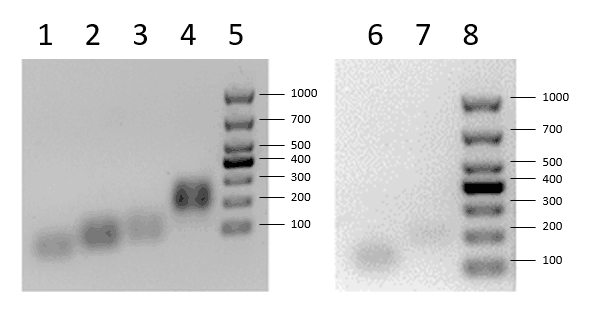
DNA TJ-Ⅰ was covalently self-assembled with glutaraldehyde through aldimine condensation in pH 8 phosphate buffer (PB) at room temperature. Atomic force microscope (AFM) and transmission electron microscopy (TEM) images showed that hollow vesicles with diameters of 50-150 nm were formed (Fig. 2a-b). “Y” shapes with arms of approximately 3-4nm were clearly observed. Its length corresponded to the theoretical length of 10 base-pairs (3.4nm), indicating that the hollow vesicles were indeed formed by DNA TJ-Ⅰ (Fig. 2c). Dynamic Light Scattering (DLS) results indicated that the particle size of DNA vesicles obtained in pH 8 PB ranged from 80 nm to 120 nm (Fig. 2d), which was consistent with AFM and TEM images. We replaced glutaraldehyde with glyoxal and recreated the assembly. The AFM images showed that a similar vesicle structure could still be produced (Fig. 2f).
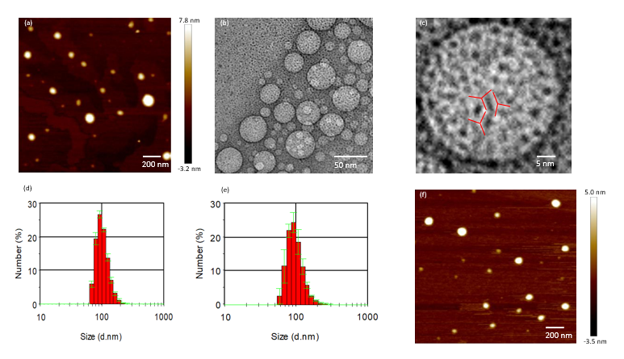
We further assembled the vesicle in pH 5 acetate buffer and pH 6 PB respectively and analyzed them by DLS. DLS results showed that the assembly’s size at pH 6 also ranged between 80 nm and 120 nm (Fig. 2e), indicating that the assembly stably exists in a slightly acidic environment. However, no nanoparticles in the assembly system at pH 5 were detected by DLS (data not shown). It implied that the assembly could not stably exist under such conditions, which might result from the hydrolysis of the imine bonds. Therefore, we concluded that DNA vesicles can be easily assembled at pH 6-8; when the pH of the system is lowered, DNA vesicles might undergo depolymerization which we labeled acid response.
In order to avoid the low-recovery purification, which was mainly aimed at getting rid of Tris, and improve the utilization of DNA, we explored whether Tris interfered with the assembly. The DNA vesicle formed at pH 8 was incubated with Tris buffer (the molar concentration ratio of DNA and Tris is 1: 500, corresponding to the original ratio before purification) and then observed by AFM (Fig. 3a). Images showed that the DNA vesicles were converted to an “annular” structure after incubation. The formation of the “annular” structure might be a result of the etching of the vesicle by Tris. The outcomes indicated that the presence of Tris did interfere with the covalent self-assembly of Vesicle Ⅰ, emphasizing the necessity of the purification.
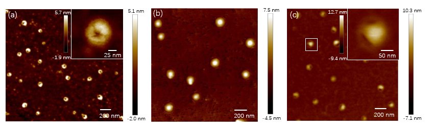
We further explored whether a decrease in solvent polarity increased the vesicle’s resistance to Tris etching and enhanced its stability. We carried out covalent self-assembly in a mixture of water and tetrahydrofuran (THF) at a ratio of 1:1, other conditions unchanged. Unlike in aqueous solutions, the DNA vesicles could not be converted into the “annular” morphology in the mixed solvent at pH 8 (Fig. 3b). However, in the mixed solvent at pH 6, a transition from vesicle to the “annular” structure was also observed (Fig. 3c). The following accounts will further explain the different outcomes of the experiment. First, solvent polarity might affect the etching reaction, as the nucleophilic substitution reaction is less likely to happen in a solvent with lower polarity. Additionally, lower pH favors the etching reaction. At pH 8, the nucleophilicity of the amino group at the 5-prime ends of DNA is stronger than the amino group in Tris, so the Schiff base formed by DNA TJ-Ⅰ and glutaraldehyde is more stable in thermodynamics. By contrast, at pH 6, the highly nucleophilic amino group of DNA TJ-Ⅰ tends to be protonated while Tris is slightly affected by acid. The protonation greatly reduces the nucleophilicity of DNA TJ-Ⅰ and decreases the stability of the vesicle.
Since DNA vesicles were not etched in pH 8 mixed solvent, we speculated that under such conditions, DNA TJ-Ⅰ could be directly used in self-assembly without purification, which averted the loss of DNA TJ-Ⅰ. To test this hypothesis, unpurified DNA TJ-Ⅰ (20 μM) were directly mixed with glutaraldehyde in pH 8 mixed solvent. Due to the high DNA concentration, ten times higher than before, the size of the DNA vesicles might increase. It enabled the vesicle to be characterized by an optical microscope, and fluorescence microscope when DNA was stained with ethidium bromide (EB). The optical microscope images showed that giant vesicles with diameters ranged from 4μm to 6μm were generated successfully(Fig. 4a). Through the optical microscope, we observed some colored ring patterns, which are caused by the interference of light. Interference ring patterns appear when optical path difference (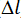) and wavelength (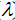) satisfy the formula below.
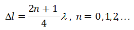These ring patterns of various monochromatic lights added up to be the colored rings. The appearance of colored ring patterns further proved that this structure is a hollow vesicle. The fluorescence microscope images showed consistent results of the vesicles’ morphology and locations with optical microscopy (Fig. 4b), indicating that the giant vesicles were indeed generated by covalent self-assembly of DNA TJ-Ⅰ.
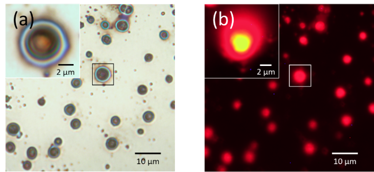
We incubated DNA vesicles with streptavidin. The sample was then stained with Coomassie brilliant blue and visualized by an optical microscope (Fig. 5a). Optical microscopy images showed that many complex microspheres approximately 10μm in size were generated. Interference ring patterns with a diameter of 5μm in the center of the complex were observed. They corresponded with the patterns of DNA giant vesicles in Figure 4a, indicating that the structure of the vesicle remained constant. The blue halo at the periphery was supposed to be the fluorescence of Coomassie brilliant blue, implying that streptavidin was successfully loaded to the vesicles’ surface. The thickness of the halo was about 5μm, meaning that the streptavidin (only 66kDa) was multilayered. It might be due to the hyper branching structure formed through hydrogen bonds between streptavidin and the remaining unassembled DNA TJ-Ⅰ (Fig. 5b).
The successful loading of streptavidin demonstrated the potential to functionalize the DNA vesicles with other functional proteins, through their fusion with streptavidin.
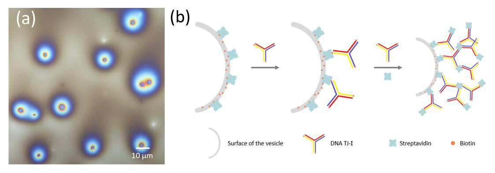
In this section, we constructed Vesicle Ⅱ through a similar approach. Its size could respond to pH changes.
We assembled DNA TJ-Ⅱ with DNA-1-tif, DNA-2-tif, and DNA-3-tif. However, we replaced PCR buffer with NaCl solution when assembled. The reasons are as followed: first, the purification process is indispensable when PCR buffer is involved. Tris, one of the components in PCR buffer, contains an amino group, which might interfere with the aldimine condensation reaction in the next step. What’s more, PCR buffer participates in acid-base reactions, which makes our system complex, thus complicating pH adjustment afterwards. However, the recovery rate of purification is very low, only about 10%, and the purification process is complicated and time-consuming. Furthermore, to assure the successful hybridization of DNA, proper salt concentration is necessary.
Consequently, we investigated the optimal NaCl concentration for the assembly of DNA TJ-Ⅱ. Agarose gel electrophoresis was used to characterize whether DNAs were completely hybridized, the system with PCR buffer as a reference (Fig. 6a-b). The gel images showed that the assembly results of DNA TJ-Ⅱ improved with the increase of NaCl concentration. It might result from the increase of dielectric constant (ε) with the increase of NaCl concentration, which reduced the repelling force (F) between negative ssDNAs, illustrated by the formula below.
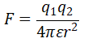Due to the insertion of the i-motif sequence in the DNAs, half of the bases are not complementary to each other, which make assembly more difficult. To solve this problem, the annealing time was prolonged in compensation.
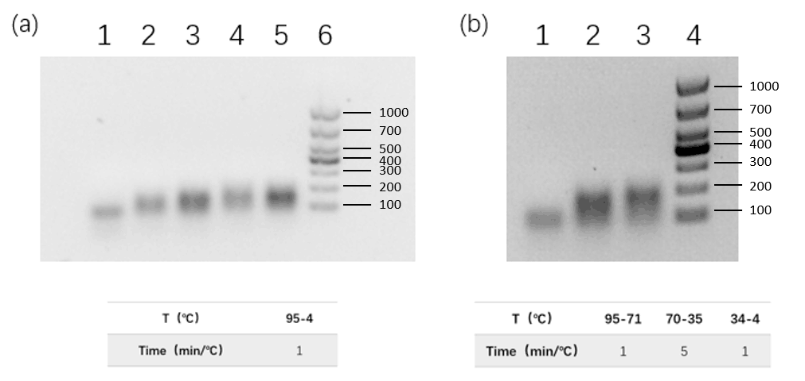
DNA TJ-Ⅱ was covalently self-assembled with glutaraldehyde through aldimine condensation in pH 6 mixed solvent (H2O: THF=1:1) at 4℃. Reasons are as follows for the adjustments of assembly conditions compared to the assembly of Vesicle Ⅰ. DNA TJ-Ⅱ is required to be a rigid in-plane building block to ensure the formation of a two-dimensional structure, instead of a three-dimensional hyper branching structure1. Therefore, the uncomplimentary parts of DNA TJ-Ⅱ should be four-stranded i-motif structures with relatively high rigidity, rather than random coils. Because of this, we carried out the assembly under the pH and temperature conditions mentioned above, which favors the formation of i-motif, demonstrated by Can Li et. al. 2. According to the study of Vesicle Ⅰ at pH 6, we utilized the mixed solvent (H2O: THF=1:1), as the stability of the vesicle increases with the decrease of solvent polarity. DLS results indicated that nanoparticles were formed with sizes ranging from 250nm to 450nm (Fig. 7).
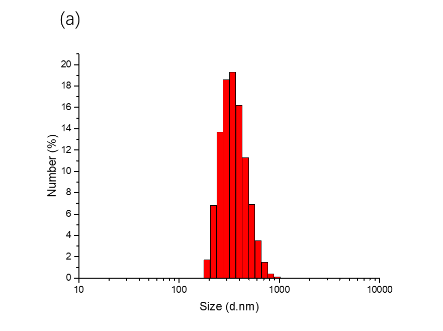
Since i-motif is completely transformed into a random coil at pH 7.2, demonstrated by the work of Can Li et. al.2, we adjusted the pH value of the systems containing Vesicle Ⅱ from 6.0 to 6.5, 7.0 and 7.5 with NaOH respectively and measured the changes of particle size distribution by DLS. The results showed that with the increase of pH value, from 6.0 to 7.5, the peak value of particle size distribution increased from 342nm to 955nm (Fig. 8a). The amount of size change corresponded to the results of the theoretical calculation, which is illustrated below (Fig. 8b). It demonstrated the sensitive alkali response of Vesicle Ⅱ.
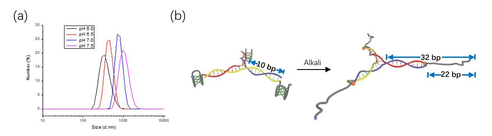